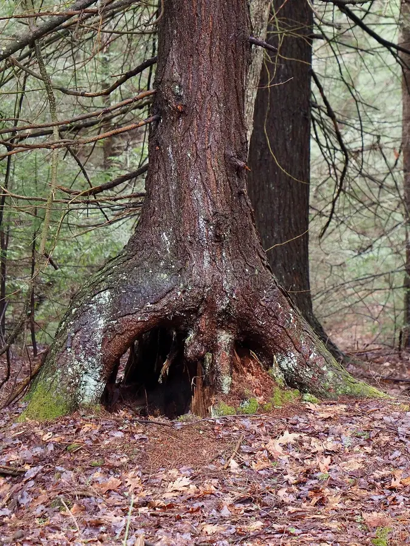

Trying to get home...

Trying to find your way out of this dense and scary forest, you stumble upon a large tree.
At the base of the tree there is an opening. Do you explore?
Click to continue
Click to continue
Click to continue